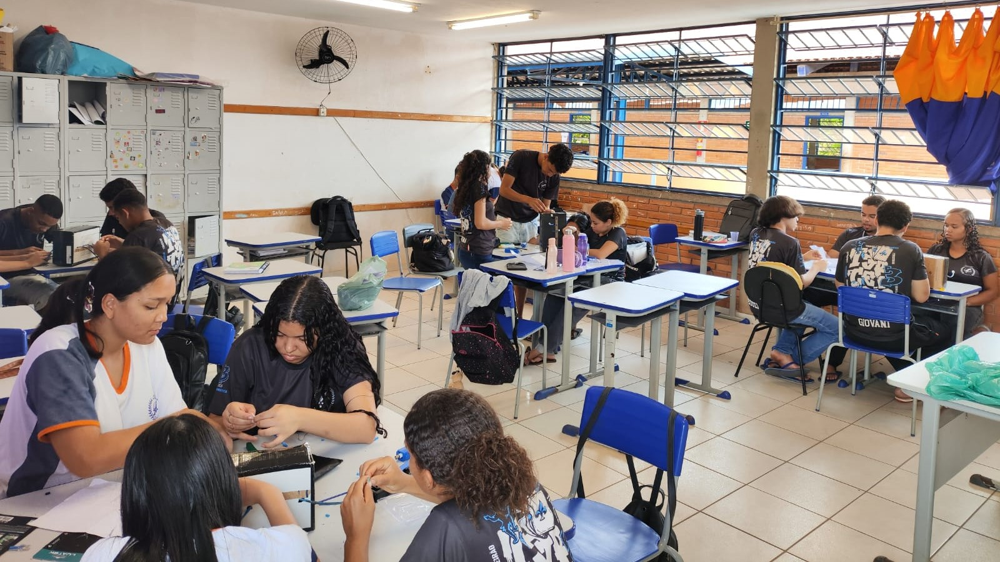
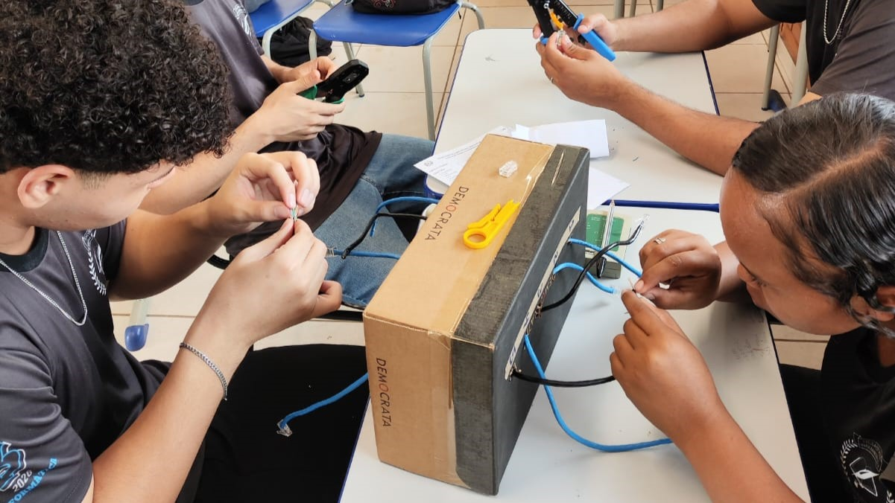
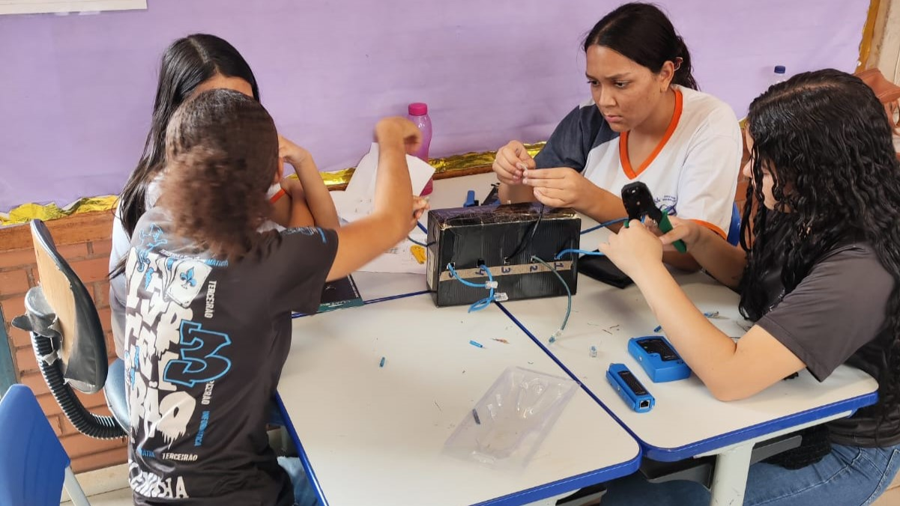
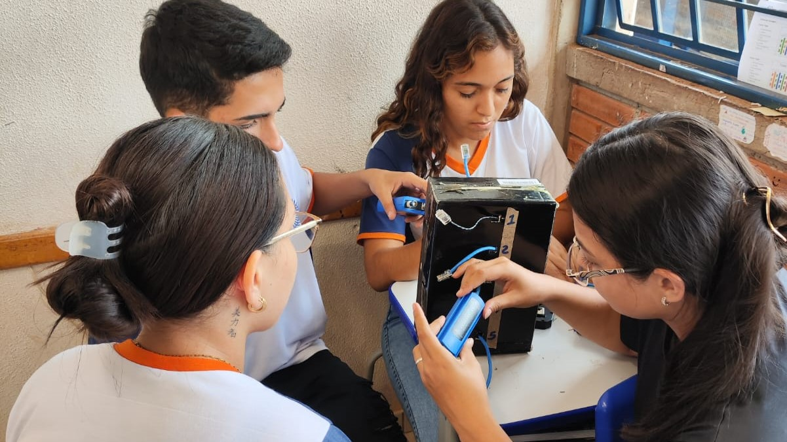
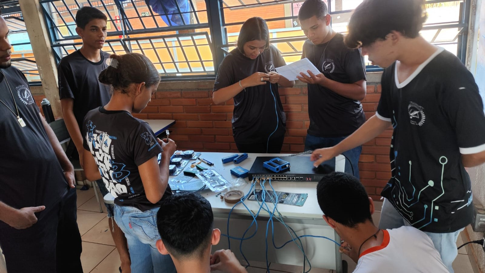

Manutenção de cabos de redes
TRANSFORMANDO CONHECIMENTO EM EXPERIÊNCIA E APRENDIZADO.
Escola Estadual Maria Barbosa Leite
3º ANO • CURSO TÉCNICO EM INFORMÁTICA
COORDENAÇÃO PROF: Professor Kleber Moraes.
As redes de computadores permitem a conexão entre diferentes dispositivos,
possibilitando a troca de informações, o compartilhamento de arquivos e o acesso à internet.
Redes
As redes de computadores estão presentes em nosso dia a dia, permitindo a conexão entre diferentes dispositivos e facilitando a comunicação e o acesso à informação. Por trás de cada conexão existe um conjunto de equipamentos, cabos e configurações que fazem tudo funcionar. Nesta área, aprendemos como essas estruturas são montadas, como os dados são transmitidos e como manter uma rede funcionando com segurança e eficiência.
Espaços equipados com computadores utilizados para aulas práticas e atividades tecnológicas.
As redes podem ser classificadas de acordo com sua área de alcance, como LAN, MAN e WAN.
As redes cabeadas utilizam fios para transmitir dados, enquanto as sem fio utilizam sinais de rádio, como o Wi-Fi.
Conhecimento de ferramentas, máquinas e dispositivos utilizados no desenvolvimento de atividades tecnológicas.
CConfira os registros das atividades práticas de Redes de Computadores! Cada fotografia apresenta momentos de aprendizado, experiências e desafios enfrentados pelos alunos na montagem, configuração e identificação de equipamentos e conexões, colocando em prática os conhecimentos adquiridos durante o curso Técnico em Informática.

TRANSFORMANDO CONHECIMENTO EM EXPERIÊNCIA E APRENDIZADO.

TRANSFORMANDO CONHECIMENTO EM EXPERIÊNCIA E APRENDIZADO.

TRANSFORMANDO CONHECIMENTO EM EXPERIÊNCIA E APRENDIZADO.

TRANSFORMANDO CONHECIMENTO EM EXPERIÊNCIA E APRENDIZADO.

TRANSFORMANDO CONHECIMENTO EM EXPERIÊNCIA E APRENDIZADO.